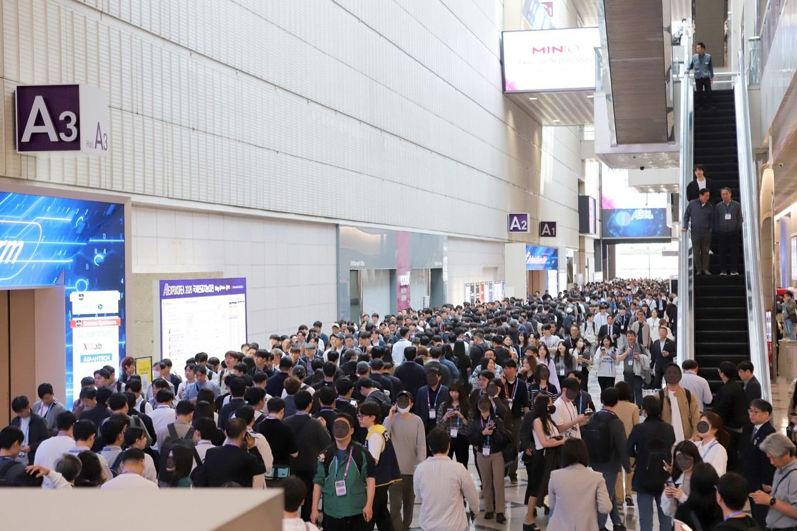

Conferences · AI
AI EXPO KOREA 2027 (10th)
- Dates
- –
- Venue
- COEX (Hall A)
- Location
- Seoul, South Korea
- Format
- In-person
- Category
- AI
- Industry
- Artificial intelligence
- Expected attendance
- 48,678
- Official website
- https://www.aiexpo.co.kr/
About
Dates are local to the host city (Korea Standard Time, UTC+9).
Topics: AI, generative AI, AI agents, machine vision, enterprise AI.
Official AI EXPO KOREA site: 2026 edition drew '총 48,678명의 참관객 및 바이어' (visitors and buyers, three-day total).
Sources
- Official — https://www.aiexpo.co.kr/
Venue
- COEX — Convention centre · 513 Yeongdong-daero, Gangnam-gu, Seoul 06164, South Korea · 7,000 capacity